"Hackerkart"
Hva er det?
Alexander Salveson Nossum | @alexanno | Norkart AS
Hva er en hacker?
* Hva forstår salen med hacker?
hacker: n.
Se også "nerd ".
Delingskultur?
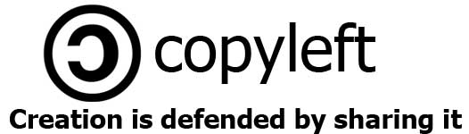
* "Kunnskap bør være fritt"
Kommersiell vs. frivillig delingskultur
* Årsaker til at man deler
Hacksessions, hackathons, codesprints - wtf?
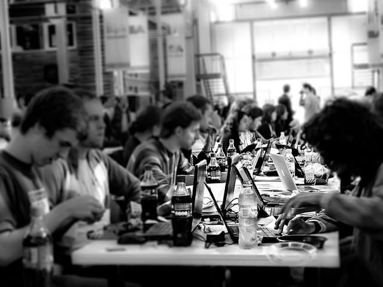
* Spørre salen
Hacksession på Hell
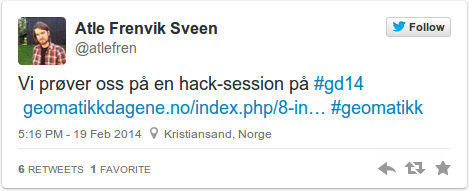
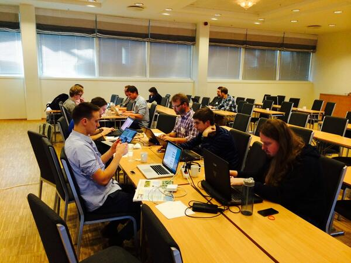
* Mest et førsøk
#Hack4NO
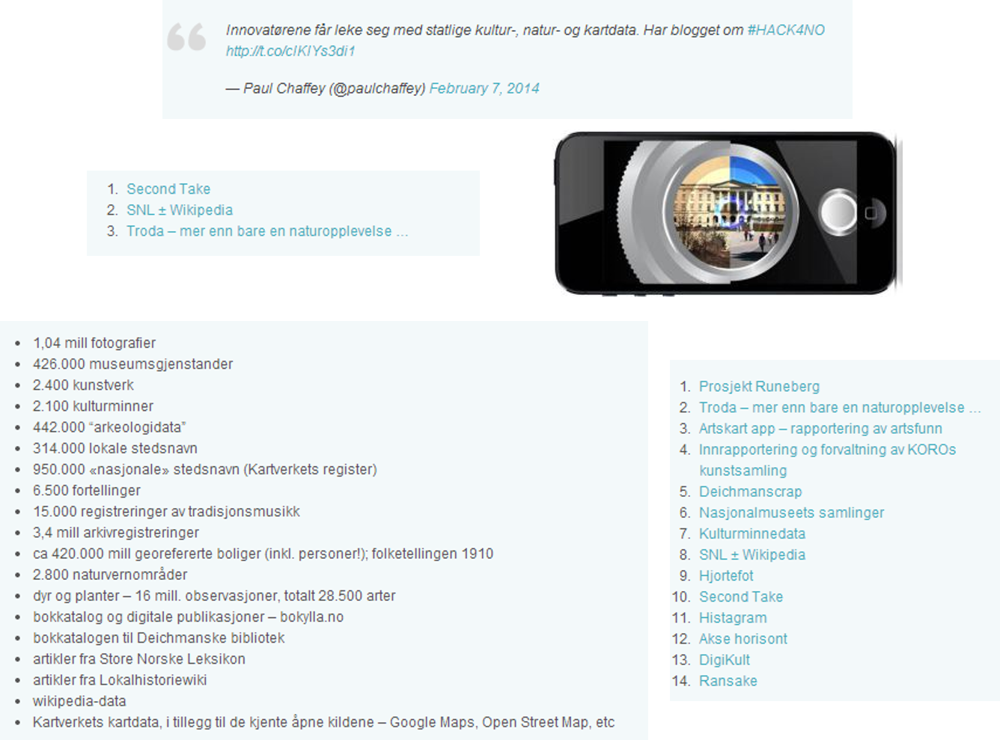
* Kultur og naturreise - tverretatlig = offentlig
#PowerHack2014
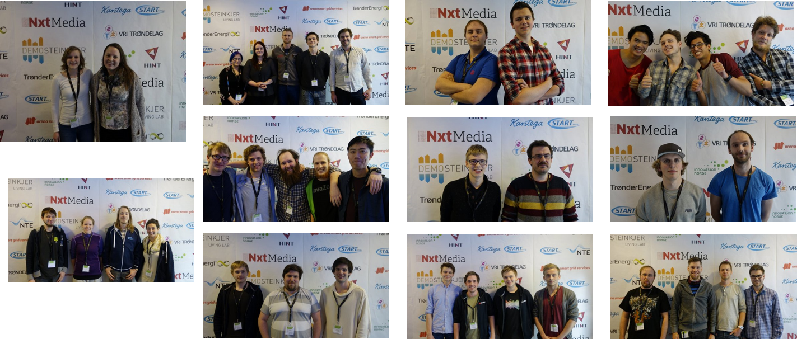
* NTE, DemoSteinkjer - energibransjen
Espen & Kresendo
"Nerdemetoden" - fra hobby til kommersiell
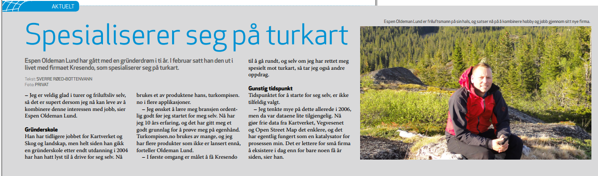
* Espen Oldeman Lund
Bengler - utfordringer utenfor menigheten
* Utviklernotater - rik kunnskapskilde - også innblikk i hvordan vi blir sett på av IT-folket
Septima
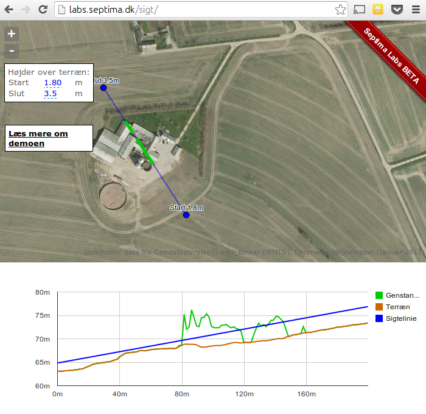
* Startet av bransjefolk
Robert og Mats
* Skikkelig open-source-nerder
Leaflet.Minimap - bidrag begge veier
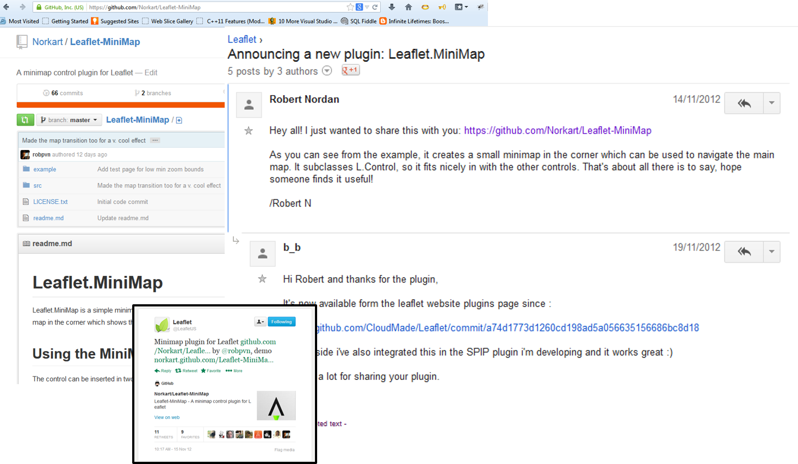
* Leaflet manglet et oversiktskart
Leaflet.Minimap - bidrag begge veier
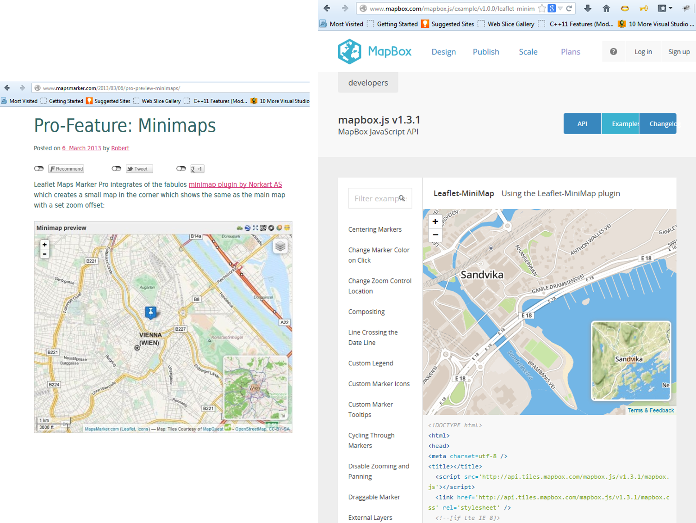
* Stor suksess - mange tok det i bruk
Bjørn Sandvik - kunnskapsdeler
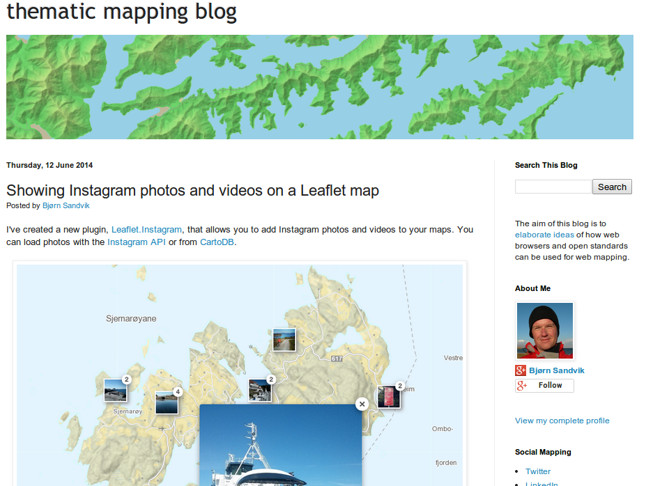
* Aktiv blogging
SOSI.js - bidrag, bruk og nytte(?)
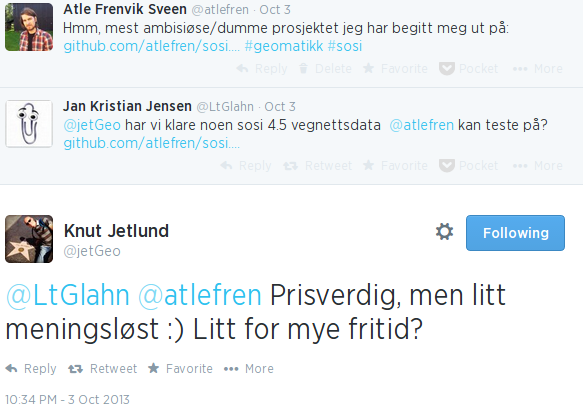
* Startet en sen kveld
WXS.TREE.JS: 3d-kart fra nerdene
Ide fra #Hack4NO
Jobbet videre på #gd14
Presenteres på #foss4g
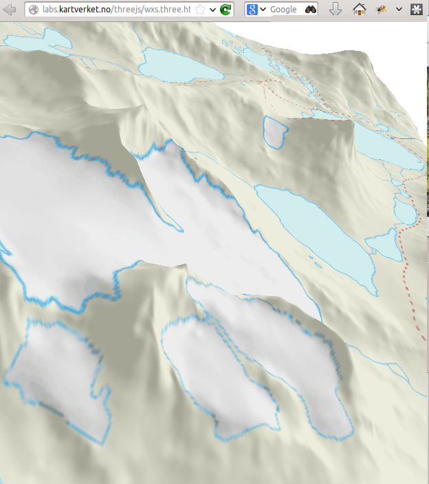
Nerdesamling
* Jarle, Bjørn, Stig Henning + Atle
* Kul ide + data = engasjement?
* mye bloggkommentarer
* Novelty-effekt?
* Gjenbruk?
* Noen ihvertfall
OpenStreetMap i Norge
Råataentusiaster
Brukes av mange
Integrasjon av off.data?
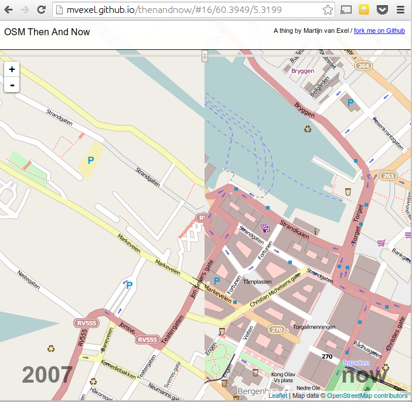
* frikart.no
Mashups - eksempler: mye innovasjon. Bakgrunnskartet har lite innovasjon.
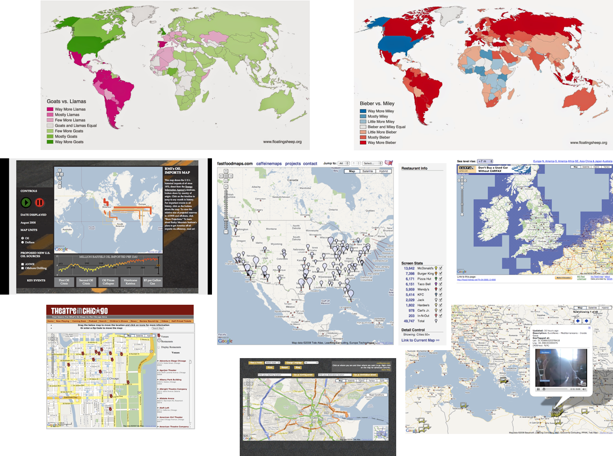
* Mashups: bruke kartet som grensesnitt for informasjon
Mapbox
Kommersiell suksess med innovative bakgrunnskart
* Mapbox sin forretningsidé er å endre bakgrunnskartetEr kunnskapsdeling (ikke kun teknologideling) en suksessfaktor for Open-Source?
Stamen Design
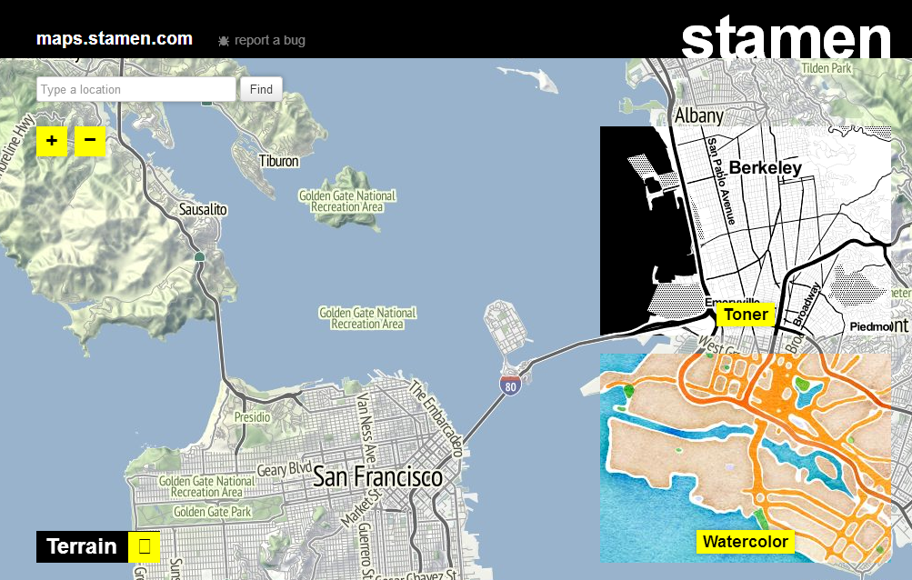
* Designfirma som lager bakgrunnskart, temakart og visualiseringer
Innovasjon i kartografien
* Bør vi innovere bakgrunnskart? ja.
Deling - hva så?
* Snakket mye om deling - men, er det utelukkende bra?
Delingskultur i akademia
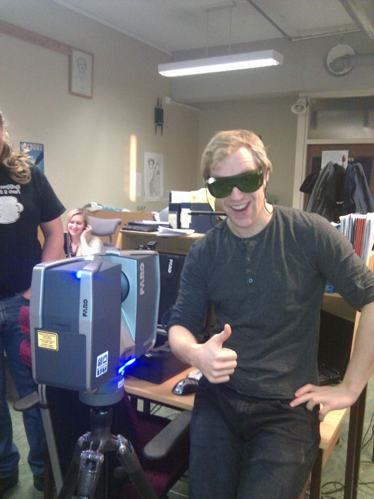
* Utdanningssektoren bør være i spissen av open source og hackerkart
Delingskultur i det offentlige
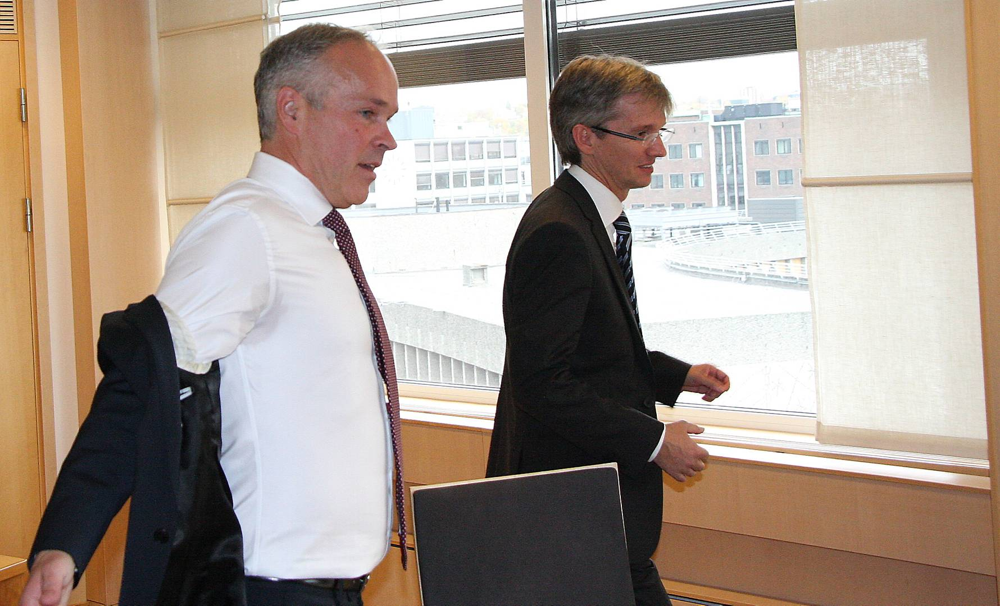
* KMD: fornye, forenkle, forbedre
Åpenhet og deling: Blir det et krav i offentlige anskaffelser?
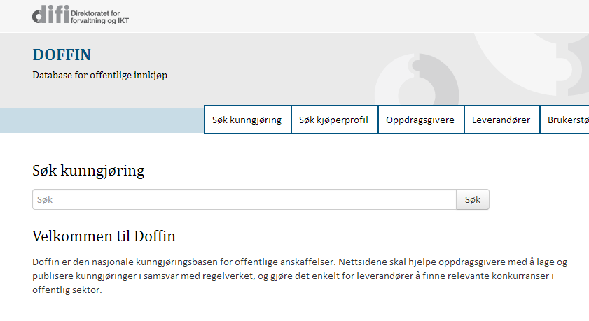
* Idag: en god del krav: _bruk_ av open-source-programvare
Hvordan løfte frem de gode alle eksemplene?
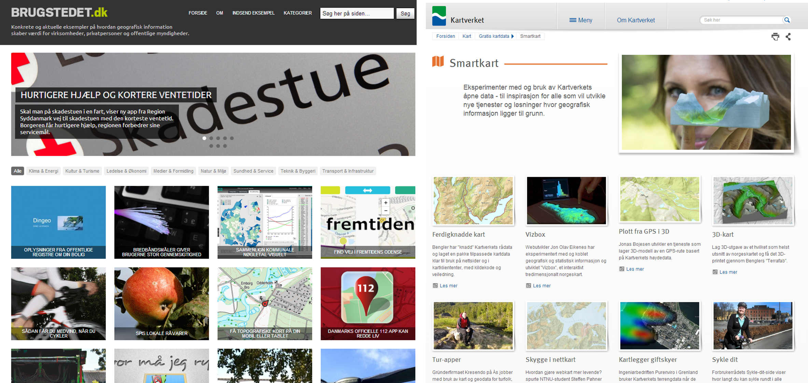
* Vi må tørre å løfte frem alle eksemplene